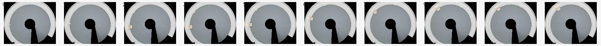
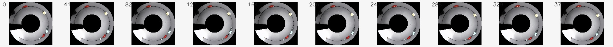
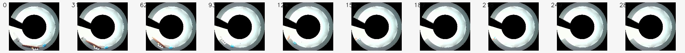
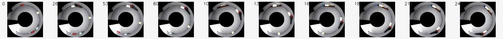
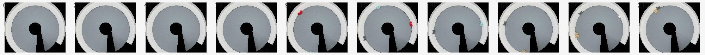
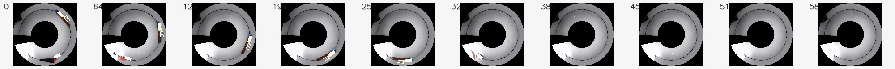
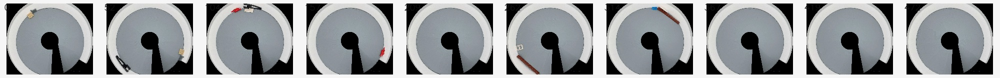

Executive Summary
Wichtigster Befund: Das aktuelle produktive botsort_reid ist auf ruhigen Daten stabil, pulst aber auf echten Motion-Stress-Replays deutlich mehr Birth/Lost-Events als die besten Motion-Tracker. Das erklaert das UI-Gefuehl von "poppt auf, verschwindet, kommt wieder".
Die ReID-Schicht selbst ist nicht der Haupthebel fuer lokale C-Kanal-Stabilitaet: botsort_reid mit und ohne ReID liegt praktisch gleichauf. Auch track_buffer und appearance_thresh haben die Live-Churn-Metrik nicht verbessert.
Empfehlung: fuer sichtbare Live-Tracklets rf_bytetrack als Primary testen/verwenden, botsort_reid mit OSNet x0.25 als Appearance-/Handoff-Shadow behalten, und UI/DB auf eine zweischichtige Struktur umstellen: stabile tracked_pieces oben, rohe tracklets darunter.
botsort_reid Churn/100 Detektionen auf Stressdatenrf_bytetrack Churn/100 Detektionen auf Stressdatenrf_bytetrack Coverage, ideal nahe 1.0Datensatz
Aufgenommen wurden die exakten, sauberen Detector-Input-Crops: .npy BGR-Arrays nach Crop/Zone, ohne UI-Overlay und ohne Bounding-Box-Einzeichnung. Die PNGs sind nur Vorschau.
Nach den Runs war die Runtime pausiert, Hardware ready, alle drei Feeds meldeten 0 Detections/Tracks und C4 hw_busy=false.
| Capture | Feed | Frames | Detections | Objekt-Trails | Prod Churn100 | Prod Birth/Lost | Prod Switch/Gap | Best practical | Best Churn100 | Best Coverage |
|---|---|---|---|---|---|---|---|---|---|---|
| C4 clean smoke | c4_feed | 120 | 227 | 4 | 2.64 | 4/2 | 1/1 | polar | 1.76 | 1.09 |
| C2 slow control | c2_feed | 428 | 2706 | 21 | 0.59 | 11/5 | 6/0 | rf_bytetrack | 0.37 | 0.94 |
| C3 slow control | c3_feed | 372 | 2235 | 9 | 0.27 | 6/0 | 0/0 | boxmot_boosttrack | 0.22 | 0.83 |
| C2 motion stress | c2_feed | 281 | 604 | 13 | 3.64 | 11/11 | 6/3 | rf_bytetrack | 2.65 | 1.01 |
| C3 motion stress | c3_feed | 242 | 1741 | 32 | 4.25 | 40/34 | 57/19 | rf_bytetrack | 2.64 | 1.04 |
| C4 motion stress | c4_feed | 211 | 321 | 19 | 28.66 | 47/45 | 35/33 | boxmot_sfsort | 22.43 | 1.00 |
| C3 handoff stress | c3_feed | 583 | 1429 | 37 | 3.36 | 24/24 | 51/14 | rf_bytetrack | 1.82 | 0.94 |
| C4 handoff stress | c4_feed | 472 | 622 | 40 | 17.36 | 54/54 | 69/36 | rf_bytetrack | 5.14 | 1.14 |
Aggregate Stress-Matrix
churn100 = (track_births + lost_track_ids) / detections * 100. Coverage ist avg_tracks_per_frame / detections_per_frame; Werte nahe 1.0 sind gesund, deutlich >1.0 deutet auf Doppeltracks, deutlich <1.0 auf verpasste Tracks.
| Tracker | Churn100 | Coverage | Avg Tracks | Births | Lost | Switches* | Gaps* | Replay Zeit s |
|---|---|---|---|---|---|---|---|---|
| polar | 3.22 | 1.44 | 3.81 | 82 | 70 | 159 | 0 | 0.12 |
| rf_bytetrack | 3.69 | 1.05 | 2.76 | 92 | 82 | 178 | 20 | 0.20 |
| rf_sort | 3.90 | 1.06 | 2.78 | 97 | 87 | 187 | 19 | 0.16 |
| rf_ocsort | 4.22 | 1.02 | 2.68 | 104 | 95 | 189 | 26 | 0.26 |
| boxmot_sfsort | 5.22 | 0.78 | 2.05 | 127 | 119 | 197 | 39 | 0.12 |
| boxmot_bytetrack | 5.60 | 0.80 | 2.10 | 136 | 128 | 197 | 78 | 0.47 |
| boxmot_boosttrack | 6.42 | 0.56 | 1.49 | 154 | 149 | 200 | 143 | 26.42 |
| boxmot_ocsort | 6.57 | 0.64 | 1.70 | 158 | 152 | 217 | 126 | 0.60 |
| boxmot_botsort:with_reid=false | 6.61 | 0.78 | 2.04 | 160 | 152 | 204 | 110 | 7.06 |
| boxmot_botsort | 6.66 | 0.78 | 2.04 | 161 | 153 | 206 | 110 | 26.03 |
| botsort_reid:track_buffer=20 | 7.17 | 0.81 | 2.13 | 173 | 165 | 214 | 104 | 27.13 |
| botsort_reid:with_reid=false | 7.25 | 0.81 | 2.14 | 175 | 167 | 216 | 105 | 6.90 |
| botsort_reid | 7.29 | 0.81 | 2.14 | 176 | 168 | 218 | 105 | 42.14 |
| botsort_reid:track_buffer=90 | 7.55 | 0.82 | 2.15 | 182 | 174 | 229 | 100 | 27.89 |
| turntable_groundplane | 9.41 | 1.41 | 3.70 | 226 | 218 | 230 | 0 | 0.14 |
| boxmot_strongsort | 9.62 | 0.68 | 1.80 | 230 | 224 | 316 | 144 | 24.06 |
* Switches/Gaps sind eine polarbewusste automatische Approximation ohne manuelle Ground-Truth-IDs. Sie sind fuer A/B-Vergleiche hilfreich, aber Churn und Coverage sind hier die robusteren UI-Stabilitaetsmetriken.
Interpretation
rf_bytetrackist der beste praktische Live-Primary-Kandidat: niedriger Churn und Coverage nahe 1.0 ueber C2/C3/C4-Stress.polarhat den niedrigsten Churn, aber Coverage ca. 1.44; das spricht fuer gelegentliche Doppel-/Uebertracks und macht ihn als alleinigen Primary riskanter.botsort_reidliefert Appearance Embeddings und ist fuer C3->C4-Handoff wertvoll, aber als sichtbarer Primary zu flickerig.botsort_reid:with_reid=falseist lokal fast gleich wie ReID an. Der lokale Instabilitaetsbefund ist also kein ReID-Threshold-Problem.boxmot_deepocsortwurde in der Vollmatrix angetestet und ist auf mehreren Stress-Replays mitLinAlgError: leading minor ... not positive definiteausgefallen; nicht produktionsgeeignet fuer diesen Pfad.- Aktuell ist nur
osnet_x0_25_msmt17.ptlokal vorhanden. Ein echter Vergleich mehrerer ReID-Backbones wurde deshalb nicht als belastbarer Hauptbefund verkauft.
Empfohlene Zielarchitektur
- Raw Tracklets: pro Feed/Tracker/Epoch die rohen Tracker-IDs als diagnostische, kurzlebige Spur speichern.
- Tracked Pieces: stabile Piece-UUID als obere Zeile. UI, Recent Pieces und Classification referenzieren diese stabile Entitaet, nicht rohe Live-Tracklets.
- Stabilizer: kurzer Holdover von 0.75-1.25 s, polar/geometry matching plus Appearance wenn vorhanden. Dadurch verschwinden Tracks nicht sofort aus UI/DB, wenn der Detector 2-6 Frames droppt.
- Primary/Shadow:
RT_PRIMARY_TRACKER_KEY=rf_bytetrack,RT_SHADOW_TRACKER_KEY=botsort_reid. Shadow-Embeddings werden per Center/Polar-Match an Primary-Tracklets gehangen. - Handoff: C3 parkt beim Exit die stabile Piece-UUID plus OSNet-Embedding; C4 claimt erst per Appearance, dann per Intake-Zeitfenster/Geometrie. Ein neues C4-Tracklet wird Kind desselben
tracked_piece.
Konkreter Plan
- PerceptionRunner um Shadow-Embedding-Enrichment erweitern: Primary Tracks behalten ihre stabile Motion-ID, bekommen aber
appearance_embeddingvom matchedbotsort_reid-Shadow. - TrackStabilizer-Service einfuehren: TTL, polar velocity prediction, merge rules, canonical piece UUID.
- DB/Local-State zweischichtig migrieren:
tracked_pieces+tracklets. Recent Pieces liest nurtracked_pieces. - Runtime C3/C4 Handoff auf
tracked_piece_uuidstatt roher global_id priorisieren. - Danach Live-A/B: 5 Minuten
botsort_reidprimary vs. 5 Minutenrf_bytetrack + botsort shadow, gleiche Metriken, UI-Video daneben.
Frame-Qualitaet







Artefakte
- Summary CSV:
docs/lab/tracking-benchmark-summary-2026-04-25.csv - Benchmark JSON je Capture:
tracker_benchmark_matrix_polar.json - Benchmark Script:
software/sorter/backend/scripts/benchmark_tracker_replay.py - Roh-Replays:
software/sorter/backend/blob/replay_captures/